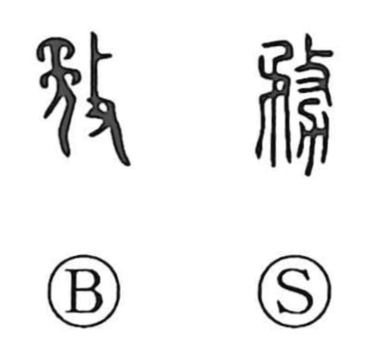

務

Kun: tsutomeru, tsutomaru, hagemu, tsutome | On: mu, bu
duty ・ service ・ to serve ・ to make efforts
Explanation
務 is a phono-semantic character. Its phonetic core is the ancient form built from 矛 “pike” and 攴 “to strike,” evoking the act of taking up a weapon and driving it forward—an image of forceful exertion. Combined with 力, which Shirakawa understands as the form of a plow, the character originally pointed to strenuous agricultural labor. The Yu Pian (Jade Book) glosses it as “to make efforts,” and from the sense of sustained toil it broadened to mean diligent effort, service, and official duty. Related characters such as 努 and 勉 likewise began with the notion of agricultural exertion.